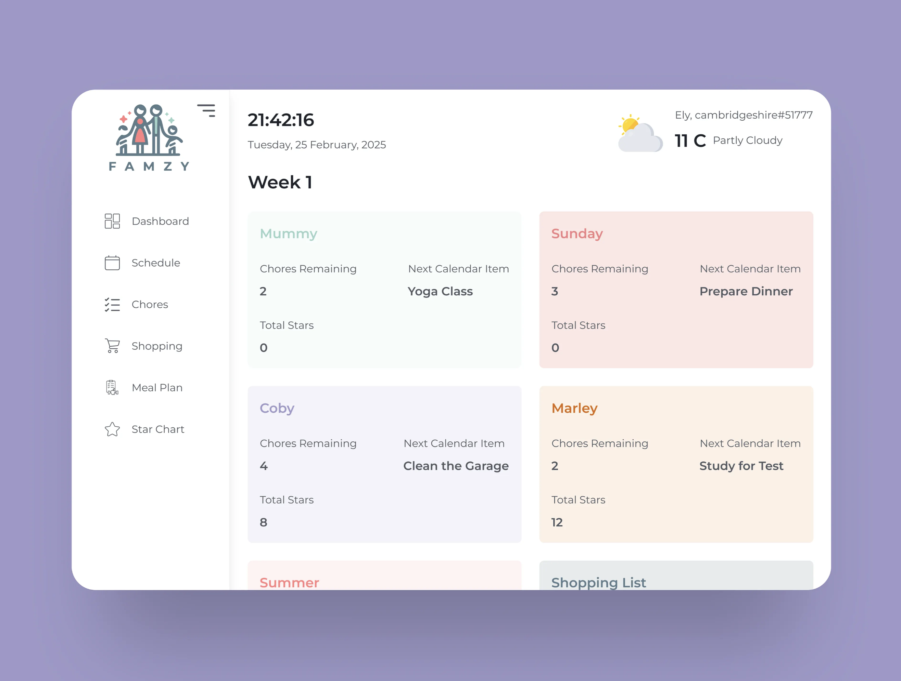
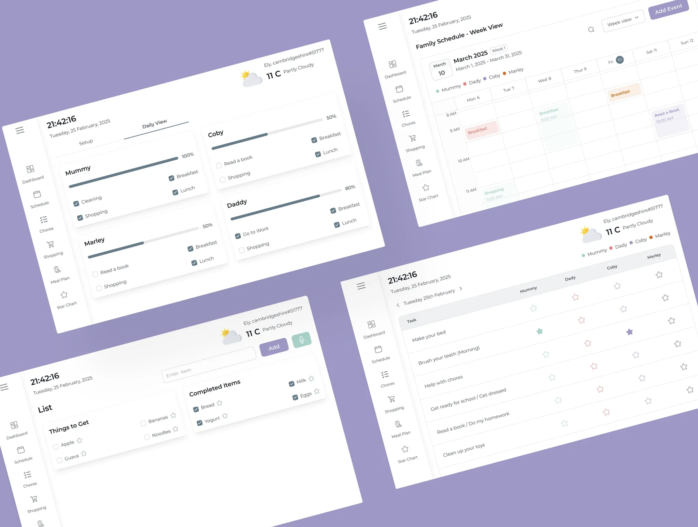

← Back to work
// todo-manager.native.js
Todo Management App
Cross-platform task manager with separate user and admin panels, built in React Native — the project built in parallel to compare notes on state management.


What we built
- Full CRUD with date-time scheduling and Stack Navigation
- Admin dashboards visualized with React Native Chart Kit
- PWA support — offline-ready, installable, fast-loading
- Seamless UI components using React Native Paper and Date Pickers